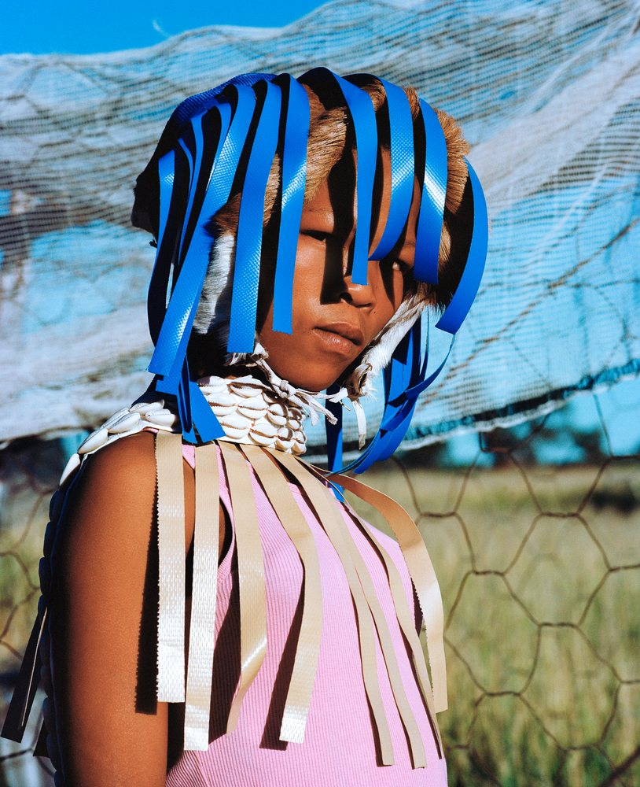
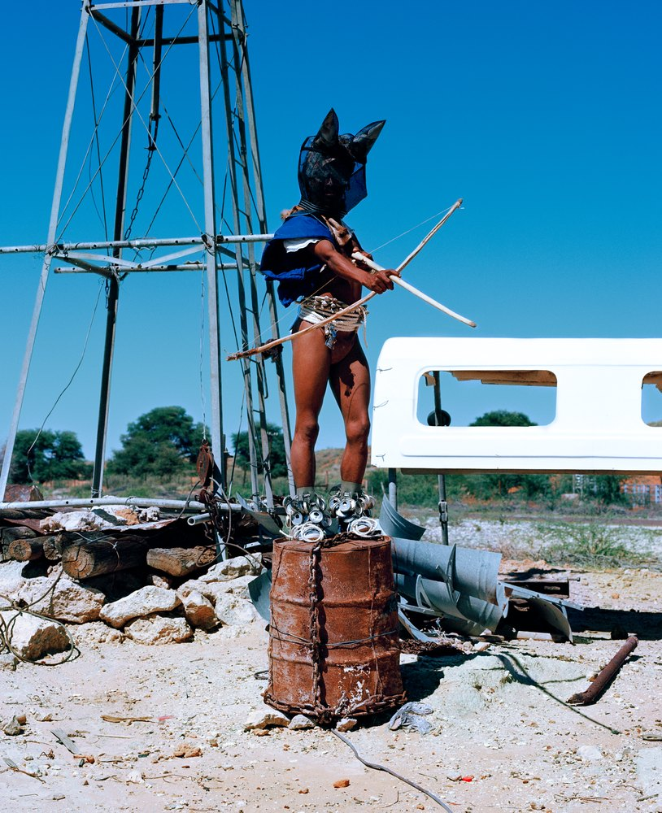
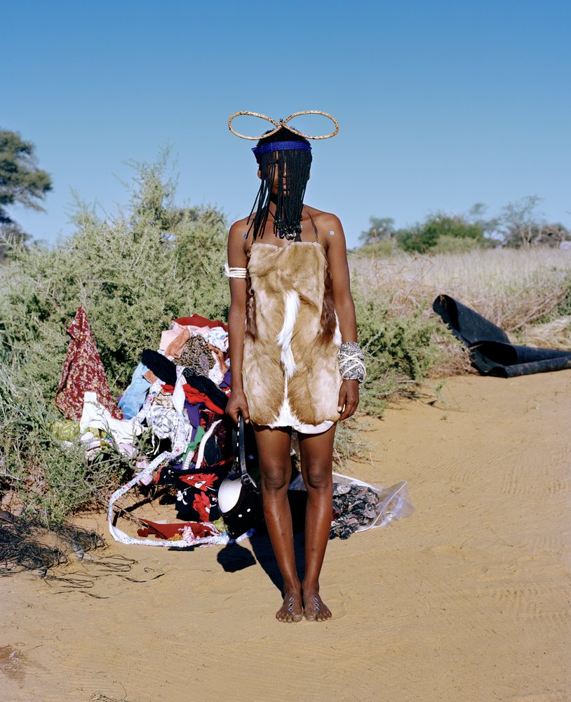
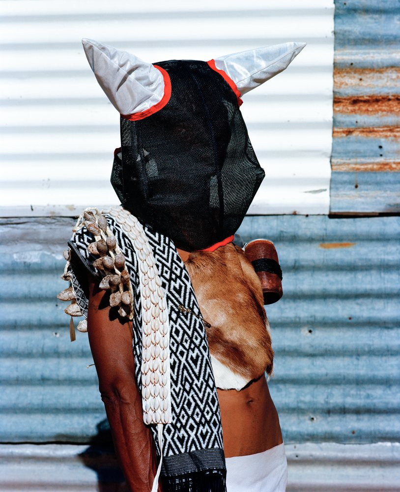
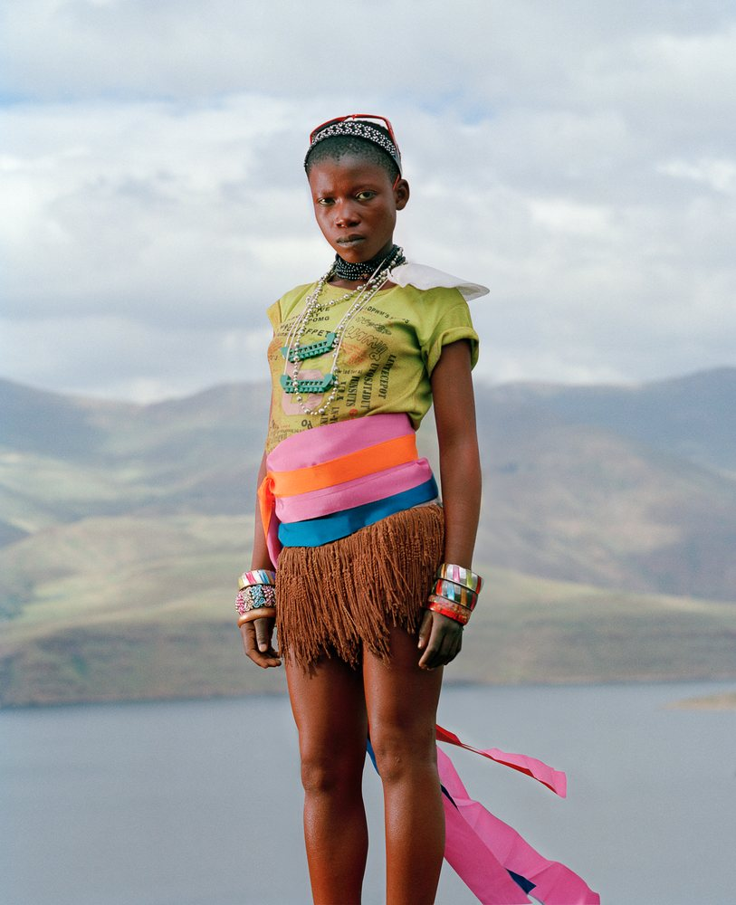
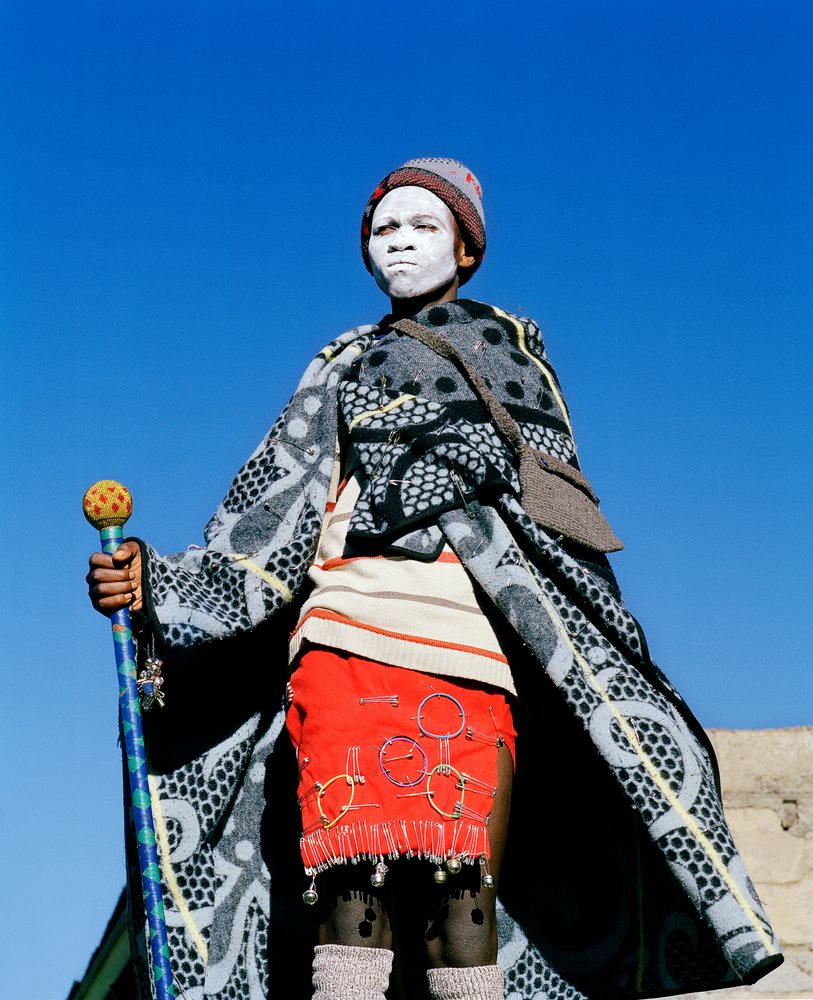
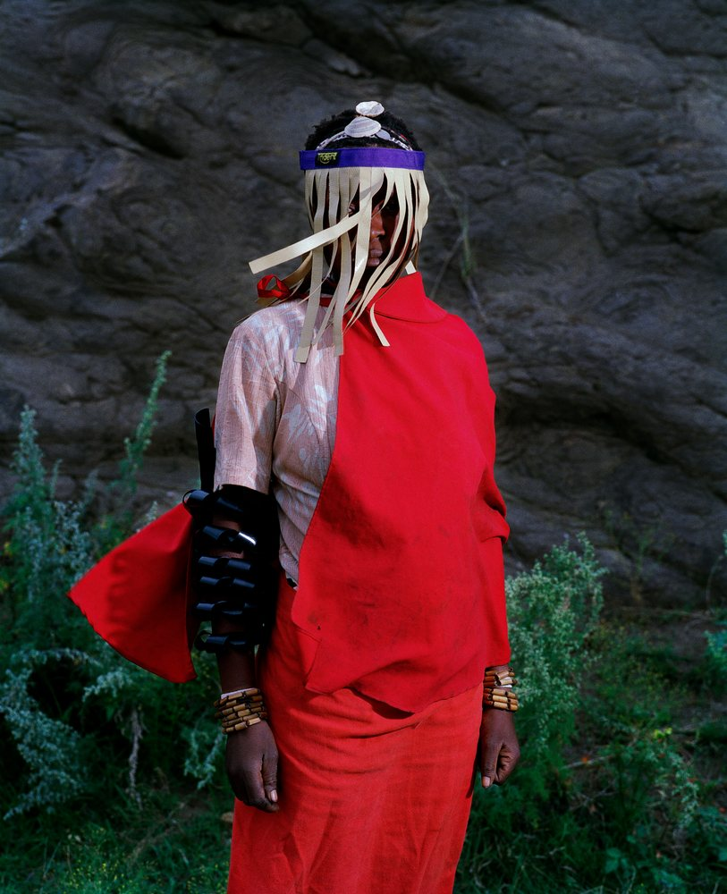
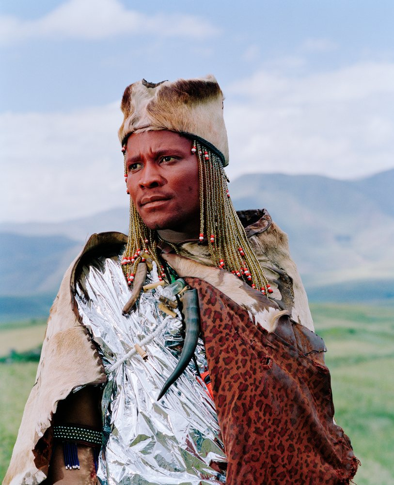

Shown at Øksnehallen
Namsa Leuba
Staged photographs that look at African identity through Western eyes.

Namsa Leuba was born in 1982 to a Guinean mother and a Swiss father, and grew up by Lake Neuchâtel in Switzerland. She studied photography and art direction at ECAL, the University of Art and Design Lausanne.
Spanning documentary, fashion and performance, she stages the signs and symbols of her heritage, from rituals and ceremonies to statuettes and masquerades, with careful attention to props, colours and gestures, and questions the line between fact and fiction, the sacred and the profane.
Text and series lines are draft, from her biography (2016), the exhibition catalogue (2016) and namsaleuba.com, read 10 November 2026.
Khoisan
Made in 2014 in the Northern Cape, South Africa. Where her other series invent their own blend of cultures, Khoisan draws on the traditions of the Khoisan people themselves. Clothing, props and accessories take over the figures, and the photographs sit between documentary and fashion.




The Kingdom of Mountains
Made in 2014 around the Katse Dam in Lesotho, during a six-month residency in South Africa. Leuba staged the clothes and accessories of the people who live there in the landscape around them: performative portraits rather than documents, on how African traditions are translated into Western images.




Zulu Kids
Made in 2014 with children in KwaZulu-Natal and Soweto, South Africa, following her series Ya Kala Ben, made in Guinea. The children pose on wooden logs like statuettes, a tradition Leuba invented, since statuettes have no place in Zulu culture; Zulu, West African and European signs are layered in each image.
The three works shown follow when Thomas has exported them from the masters at about 2,000 px.